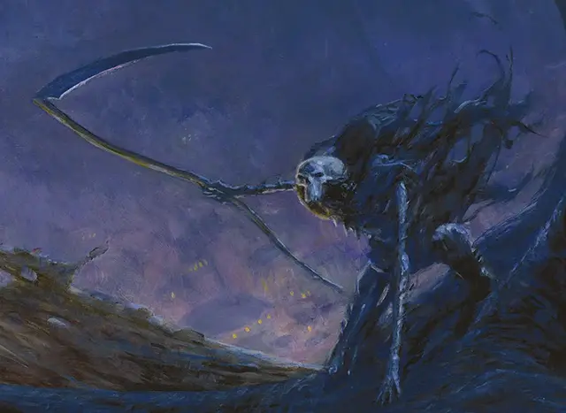

Спектр ночного покрова
Nightveil Specter
Средняя Нежить, нейтрально-злая

Класс Доспеха 17 (природный доспех)
Хиты 105 (14к8 + 42)
Скорость 30 футов
| мод | спас | ||
|---|---|---|---|
| СИЛ | 18 | +4 | +4 |
| ЛОВ | 19 | +4 | +8 |
| ТЕЛ | 16 | +3 | +3 |
| мод | спас | ||
|---|---|---|---|
| ИНТ | 6 | −2 | −2 |
| МДР | 17 | +3 | +7 |
| ХАР | 11 | +0 | +0 |
Навыки Восприятие +7, Проницательность +7, Скрытность +8
Сопротивление урону некротическая энергия; дробящий, колющий, рубящий от немагических атак
Иммунитет к урону яд
Иммунитет к состояниям испуг, истощение, отравление, очарование
Чувства тёмное зрение 120 футов, пассивное Восприятие 17
Языки понимает Общий, но не может говорить
Опасность 10 (5900 опыта)
Бонус мастерства +4
Особенности
Скакун. Если спектр не в седле, он может использовать бонусное действие, чтобы магическим образом телепортироваться на своего сумракокрыла [gloamwing], при условии, что спектр и сумракокрыл находятся на одном плане существования. Когда он телепортируется, спектр появляется верхом на сумракокрыле вместе со всем снаряжением, которое он носит или несет. Пока он верхом и дееспособен, призрака нельзя застать врасплох, и он, и его скакун получают преимущество на спасброски Ловкости.
Действия
Мультиатака. Спектр совершает две атаки Косой.
Коса. . Рукопашная атака оружием: +8 к попаданию, досягаемость 10 фт., одна цель. Попадание: 11 (2к6 + 4) рубящего урона плюс 13 (3к8) урона психической энергией.
Искажение разума (перезарядка 5–6). Спектр магическим образом испускает психическую энергию в виде 60-футового конуса. Каждое существо в этой области должно преуспеть в спасброске Мудрости Сл 15, иначе получит 22 (5к8) урона психической энергией и будет ошеломлено на 1 минуту. Ошеломленное существо может повторять спасбросок в конце каждого своего хода, оканчивая эффект на себе в случае успеха.
Жатва воспоминаний (3/день). Спектр касается одного недееспособного существа и выбирает 1 час из последних 24. Если существо не преуспеет в спасброске Интеллекта Сл 15, существо теряет все воспоминания об этом часе. Существо восстанавливает память только в том случае, если спектр погибает в течение следующих 24 часов.
Описание
Спектр ночного покрова Равники — это хранители нежити в капюшонах, которые ездят верхом на летающих существах, называемых сумракокрылами [gloamwing]. Они грозные агенты Дома Димиров, защищающие территорию и интересы этой гильдии, особенно окрестности Ночного Покрова, откуда спектры и получили свое название. Их работа может включать в себя изгнание людей, которые случайно подошли слишком близко к секретному собранию на крыше, убийство тех, кто сознательно проникает в собственность димиров, и отслеживание тех, кто украл секреты гильдии, а затем стирание этих секретов из разума своих жертв, чтобы гарантировать, что они никогда не будут раскрыты.
Ограниченное сознание. Спектр ночного покрова возникает, когда магия разума Дома Димир стирает личность человека, оставляя разум настолько сломанным, что он больше не может жить. Таким образом, спектры Ночного Покрова не помнят о своих прошлых жизнях, и они просто достаточно умны, чтобы выполнять приказы с некоторой долей творчества. Они выполняют возложенные на них задачи с бесстрашной решимостью.
Ездовое существо Сумракокрыл. Если сумракокрыл [gloamwing] был убит, то его спектр зацикливается на уничтожении виновных. Если спектр выживает, он может создать нового сумракокрыла в течение месяца, в течение которого спектр становится недееспособным.
Голова cумерекрыла почти крысиная, с выступающими зубами, а кожистая кожа туго натянута на череп, а его глаза представляют собой пустые глазницы. Его тело покрыто костяными пластинами, а из плеч тянутся огромные кожестые крылья.
Природа нежити. Спектру Ночного Покрова и его сумеречному скакуну не нужен воздух, еда, питье или сон.